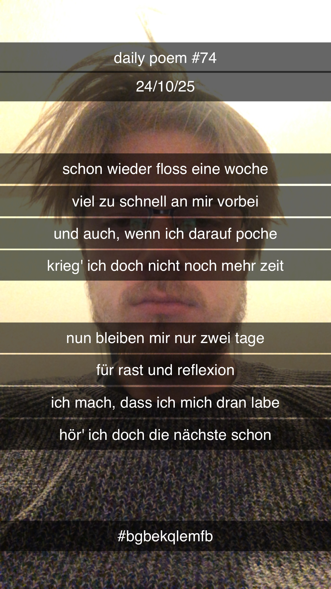

Tage im Fluss
Schon wieder floss eine Woche
Viel zu schnell an mir vorbei;
Und auch wenn ich darauf poche,
Krieg' ich doch nicht noch mehr Zeit –
Nun bleiben mir nur zwei Tage
Für Rast und Reflexion –
Ich mach', dass ich mich dran labe,
Hör' ich doch die nächste schon.
